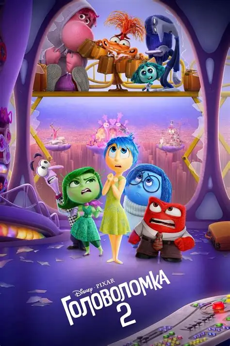

Головоломка 2, режиссёр Келси Манн, 2024 годМультфильм студии Pixar, продолжение «Головоломки» 2015 года. В мировом прокате он собрал около 1,7 млрд долларов и стал одним из самых кассовых мультфильмов в истории.
Героине Райли исполняется 13 лет, и в её голове появляются новые эмоции: Тревожность, Зависть, Хандра и Смущение. Они начинают спорить со старыми эмоциями — Радостью, Грустью, Гневом, Страхом и Брезгливостью — за управление девочкой.